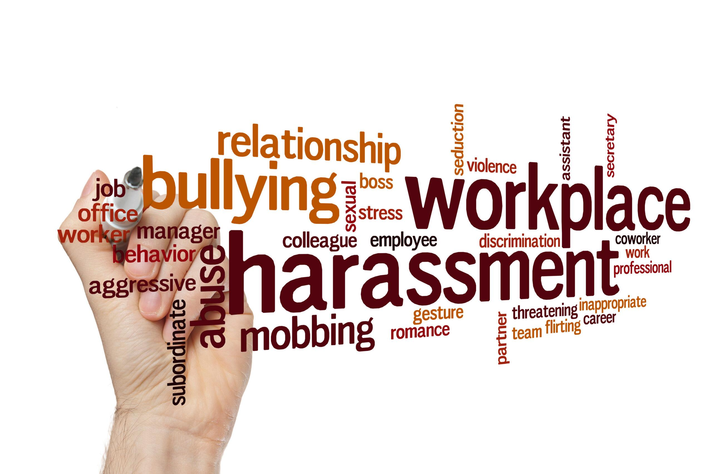

Contact| Tel: 012 0300 200 | Email: reportharassment@worksafedesk.co.za | FaceBook : WorK Safe Desk | X : WorKSafe Desk | Instagram : WorKSafe Desk | Linkedin : WorK Safe Desk
☰

Report Harassment
Contact| Tel: 012 0300 200 | Email: reportharassment@worksafedesk.co.za | FaceBook : WorK Safe Desk | X : WorKSafe Desk | Instagram : WorKSafe Desk | Linkedin : WorK Safe Desk
Report Harassment

The aim of WorkSafe Desk is to provide a secure, confidential, and user-friendly platform that allows employees to report workplace harassment and misconduct safely. The application is designed to encourage individuals to speak up without fear of retaliation, while enabling organizations to effectively track, manage, and resolve reported cases in a timely and professional manner. Ultimately, the system promotes a safer, more respectful, and accountable work environment for all employees.
WorkSafe Desk is committed to providing a safe and confidential platform for reporting workplace harassment, while promoting accountability, respect, and a culture where every voice matters.

1.Harassment
2.Discrimination
3.unfair Dismissal
4.Unsafe working Conditions
5.Bullying

WorkSafe Desk allows employees to report different forms of workplace harassment, including verbal abuse, physical intimidation, sexual harassment, bullying, and discrimination. It also supports reporting abuse of authority and any behavior that creates an unsafe or uncomfortable work environment, ensuring everyone has a safe space to speak up.

WorkSafe Desk also allows employees to report workplace bullying and gossip, where individuals are excluded, mocked, or talked about in a harmful way. Such behavior can create a toxic environment, affecting confidence, mental well-being, and teamwork. The platform ensures these issues can be reported safely and addressed appropriately.

WorkSafe Desk enables employees to report workplace conflicts and verbal confrontations, where arguments, shouting, or aggressive communication create a hostile environment. Such behavior can disrupt teamwork and make individuals feel unsafe or disrespected. The platform provides a safe way to report these incidents and promote respectful communication.

Workplace harassment often goes unreported, leaving victims unheard. Fear of retaliation or stigma silences many employees. This creates toxic environments where misconduct thrives unchecked. WorkSafe Desk empowers staff to report issues safely and confidentially. Every case is documented, tracked, and escalated to the right channels. By ensuring accountability, the platform brings justice and restores trust.

Workplace harassment often hides in everyday interactions like this. Victims may feel pressured, silenced, or unsure how to respond. Unchecked, these behaviors erode trust and create toxic environments. WorkSafe Desk provides a safe, confidential way to report misconduct. Reports are documented, tracked, and escalated to ensure accountability. By empowering employees, the platform delivers justice and restores dignity.

Workplace harassment often takes the form of unwanted physical contact. Victims may feel trapped, fearing retaliation or disbelief. Such behavior undermines professionalism and creates unsafe spaces. WorkSafe Desk offers a confidential platform to report misconduct. Reports are securely logged, investigated, and escalated for justice. By ensuring accountability, the app restores dignity and workplace trust.

Verbal harassment often leaves employees feeling cornered and powerless. Stress and intimidation erode confidence and workplace morale. Unchecked, these behaviors create toxic and unsafe environments.
Verbal harassment often leaves employees feeling powerless and unheard. Dominant voices can silence others, eroding respect and morale. Unchecked, this behavior creates toxic and unsafe work environments. WorkSafe Desk provides a confidential platform to report misconduct.

Unwanted physical contact is one of the most harmful forms of harassment. Victims often feel unsafe, forced to defend themselves in the moment. Such incidents destroy trust and compromise workplace dignity. WorkSafe Desk provides a confidential platform to report misconduct.